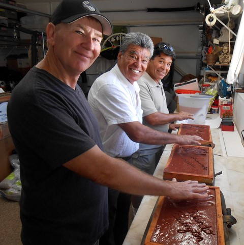

|
8" X 16" Brick
Designed and Produced by Venice,
Florida artist, SEAN COLSON

Orlando Bevington of the
The Venice Circus Arts Foundation
with Armando & Tito Gaona of the famous Flying Gaonas
circus flying trapeze act. Making hand prints in their
pavers for the Circus Walk of Fame.
|